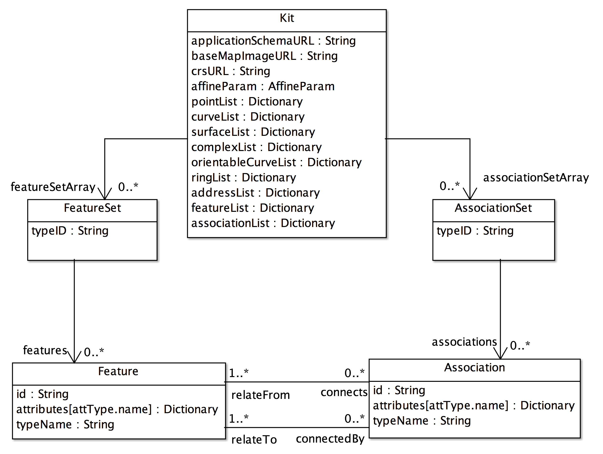
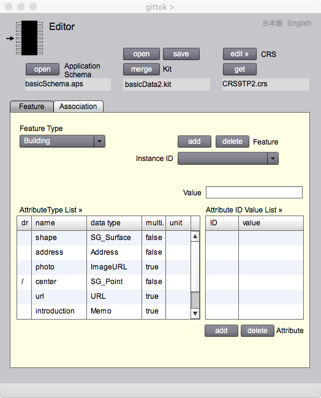
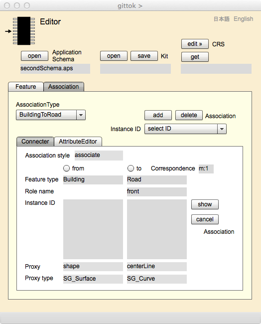
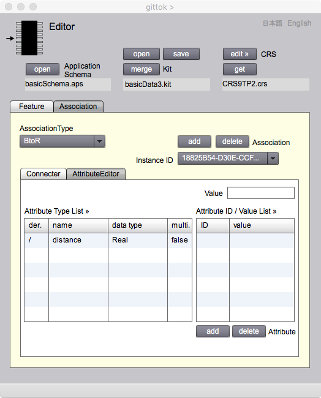

Editor
データの編集
はじめに
Editor ページは，応用スキーマに従って地物及び関連のインスタンスを取得し，編集するためにあります．そして地理データセット（gittok では kit といいます）を出力します．ここでは，まず地物インスタンスとその属性値を取得するときの規則であるインスタンスモデルを解説します．次に，実際に地理データをつくる手順を説明します．さらに，取得できる属性の種類とその概要について解説します．最後に，このページの操作法を示します．インスタンスモデルについては，以下の講義用スライドを最初に見ると良いでしょう．
講義用スライド
インスタンスモデル
....キット
....地物集合
....関連集合
....地物
....関連
地理データの取得とその手順
座標参照系と地図投影法の指定
Editorの操作法
講義用スライド
インスタンスモデル (Instance Model)
インスタンスの構造は，インスタンスモデルというスキーマで定義されています．応用スキーマには，地物型及び関連型が定義されていますので，インスタンスモデルは，インスタンス（オブジェクトまたは単純にデータという場合もある）の集まりである地理データセットを取得するための仕様書という役割をもちます (図１参照)．
図１．インスタンスモデルとデータセット
では，インスタンスはどのような構造をもつのでしょうか．以下に，gittok で使用しているインスタンスモデルを示します（図２参照）．

図2．gittokで使用するインスタンスモデル
インスタンスモデルは，どのような地物型，関連型であっても，一定の構造をもった地理データとして実装できるようにするためのスキーマです．
キット (Kit)
gittokではインスタンスの集合を格納する地理データセットをキット(kit) と呼びます．Kit は応用スキーマに従って作成されます．Kit は，地物インスタンスの集合 (FeatureSet)と関連インスタンスの集合 (AssociationSet) を含みます.例えば，建物，道路，そして街路樹を含む kit があったとします．また建物と道路，道路と街路樹の間には関連があるとします．それぞれの地物型をとる地物インスタンスは複数あるのが普通です．例えば建物が100棟，交差点から交差点までを単位とする道路が50本，そして道路上に植えられた街路樹が65本というようにです．また，建物ー道路関連は100件，道路ー街路樹関連は50件あるかもしれません．つまり，キットはそれぞれ複数の種類の地物の集合（建物，道路，街路樹）と関連の集合（建物ー道路，道路ー街路樹）をもちます．この構造を，インスタンスモデルでは，キットはfeatureSetArrayという役割をもつ複数の地物集合(FreatureSet)及び，associationSetArrayという役割名をもつ，複数の関連集合 (AssociationSet) をもつ，と表現しています．そして，上の例でいえば，FeatureSet 及び AssociationSetそれぞれは，建物であれば，100棟のインスタンス (features)，道路ー街路樹関連であれば50件の関連インスタンス(associations) をもつでしょう．地物インスタンス，関連インスタンスは，Feature, Associationという型をとりますが，それらは，地物型 (FeatureType)，関連型 (AssociationType)のIDを属性にするので，インスタンスがどの型に従うかがわかります．
属性
Kitクラスは，複数の属性をもちます．このクラスのインスタンスは地理データセットになる訳で，いわば，これが地理空間データベースと呼べます．gittokではMySQLのようなデータベース管理システム (DBMS) は使わず，データ操作は全てメモリー上で行います．さて，それでは kit はどのような属性を保持するでしょうか．
applicationSchemaURL：Kitは応用スキーマに従って作成されますが，kit自身，自分がどの応用スキーマに従うかを示す情報を持っています．それがこのURLです．
baseMapImageURL: gittokではデジタイズ用の地図画像（ベースマップという）を用意し，それを画面に表示して，空間属性（点，線，面）を取得（数値化という意味でデジタイズという）します．ベースマップの所在を示すURLがこの属性です．
affineParam: ベースマップ上で幾何データをデジタイズしますが，データがもつ座標は，そのままですと，画面座標になります．しかし，これを地上の座標にしておくと，空間解析を行うときに，地上の尺度で計算できるので，距離や面積などを，分かりやすい単位で求めることができるようになります．そこで，画面座標を地上の平面座標に換算するパラメータが必要になります．gittokでは画面座標を，地上の平面座標に換算するためにアフィン変換を用い，そのパラメータを最小二乗法で求めます．また，換算の正確度を評価するパラメータも求めることができます．この方法の詳細については，edit CRSボタンを押すと現れる CRS Definition ページのテキストを見て下さい．
crsURL: affineparamは画面座標と地上の平面座標の換算のためにありますが，地上の平面座標と経緯度の相互換算を行うためには，座標参照系 (Coordinate Reference System)が選択されなければいけません．crsURLは，座標参照系の定義とパラメータが入っているxml文書の所在位置を示します．これを使えば，gittokではガウス・クリューガ投影を使って，相互の換算を行うことができます．投影の仕組みについては，CRS Managerのページで解説しますので，そちらで学んで下さい．ます．gittok で使われる座標換算の詳細については，CRS Definition ページで解説します．
pointList: デジタイズした点は，SG_Point型をとるインスタンスですが，そのリストがpointListです．このリストに対してidを指定すれば，点を得ることができます．なお，幾何プリミティブについて知りたい場合は，AttributeTypeDesignerの解説を読みましょう．また，より詳細に学びたい場合は，別に用意するスライドを見て下さい．
curveList: デジタイズした曲線は，SG_Curve型をとるインスタンスですが，そのリストがcurveListです．このリストに対してidを指定すれば，曲線を得ることができます．
surfaceList: デジタイズした曲面は，SG_Surface型をとるインスタンスですが，そのリストがsurfaceListです．このリストに対してidくぉ指定すれば，曲面を得ることができます．
complexList: 幾何複体は，SG_Complex型をとるインスタンスですが，そのリストがcomplexListです．幾何複体はデジタイズして得るものではなく，ほとんどの場合，空間解析の結果を幾何で表現するときに使います．
orientableCurveList: 有向曲線リストは，SG_OrientableCurve型をとる有向曲線のインスタンスを内容にし，idをキーにするDictionaryです．有向曲線とは，SG_Curveを継承し，向きが付加されています．有向曲線は曲面の境界線の構成要素になり，プラスの符号をもつ場合は，曲面は左側にあり，マイナスの符号をもつ場合は曲面は右側にあります．
ringList: リング（輪）リストは，SG_Ring型をとり，曲面の内側と外側を区切る境界線になります．リングは有向曲線の列で表現されます．
addressList: 地物が属性として，住所をもつ場合は，そのインスタンスはaddressListの要素になります．アドレスリストは，Address型をとるアドレスを内容にして，そのidをキーにするDictionary型をとりまる．アドレスについてより詳しく知りたい場合は，別に用意するスライドを見て下さい．
featureList: 型によらず，全ての地物インスタンスを集めたリストです．GeometryWindowなどで，幾何プリミティブを指定して，それが属性になっている地物インスタンスを特定する必要がありますが，そのときは，このfeatureListに地物インスタンスのidを与えれば，簡単に地物インスタンスを取り出すことができます．
associationList: 型によらず，全ての関連インスタンスを集めたリストです．GeometryWindowなどで，幾何プリミティブを指定して，それが属性になっている関連インスタンスを特定する必要がありますが，そのときは，このassociationListに関連インスタンスのidを与えれば，簡単に関連インスタンスを取り出すことができます．
関連
キットは，featureSetの集まり，つまり地物型ごとにまとめられた地物インスタンスの集合の集まりと関連します．この関連の役割名がfeatureSetArrayです．同様に関連インスタンスの集合の集まりと関連しますが，その役割名はassociationSetArrayです．これらについて，以下に解説します．
featureSetArray: 地物型ごとに作られる，地物インスタンスの集合featureSetを集めて作られるDictionary型をとるデータです．キーとしては，地物型の型名が使われます．
associationSetArray: 関連型ごとに作られる，関連インスタンスに集合associationSetを集めて作られるDictionary型をとるデータです．キーとしては，関連型の型名が使われます．
地物集合 (FeatureSet)
地物型ごとにまとめた地物インスタンスの集合を，地物集合と呼びますが，その型はFeatureSetです．以下の属性と関連をもちます．
属性
typeID: 地物型の識別子です．
関連
featureSetはfeaturesという役割名をもつ，地物インスタンスの集まりに関連します．
features: 地物インスタンスはFeatureという型を取ります．featuresはその集まりで，実質的にインスタンスの集まりを表現します．
関連集合 (AssociationSet)
関連型ごとにまとめた関連インスタンスの集合を，関連集合と呼びますが，その型はAssociationSetです．以下の属性をもちます．
属性
typeID: 地物型の識別子です．
関連
associations: 関連インスタンスはAssociationという型を取ります．associationsはその集まりで，実質的に関連インスタンスの集まりを表現します．
地物 (Feature)
これは地物インスタンスがとる型です．地物インスタンスは地物型に従って作られますので，そのインスタンスが従う地物型FeatureTypeを参照し，二つの属性と二つの関連から成り立ちます．
属性
id: 地物インスタンスの識別子です．
attributes: 属性型の名前をキーとし，属性値を内容とするDictionary型を取る地物属性の集まりです．
関連
connects: 地物インスタンスが，他の地物インスタンスと関連するときは，関連インスタンスを通して行います．connectsを使えば，複数の関連インスタンスと関連することができます．
connectedBy: 地物インスタンスが，別のインスタンスから関連されるときは，関連インスタンスを通して行います．connectedByを使えば，１つの関連インスタンスからの関連を受けることができます．
関連 (Asociation)
これは関連インスタンスがとる型です．関連型AssociationTypeを参照し，二つの属性と二つの関連から成り立ちます．
属性
id: 関連インスタンスの識別子です．
attributes: 関連型の名前をキーとし，関連インスタンスの属性の値を内容とするDictionary型を取る，関連の属性の集まりです．
関連
relateFrom: 関連インスタンスは関連元の地物インスタンスと，関連先の地物インスタンスを結ぶ働きをもっています．relateFromという役割は，関連元の地物インスタンスを示すためにあります．
relateTo: この役割は，関連先の地物インスタンスを示すためにあります．関連先の地物インスタンスは，複数になる場合があります．
地理データの取得とその手順
地理データの取得とは
地理データの取得とは，地物インスタンス，関連インスタンス及びその集まりを取得し，キットに入れて，外部に出力するファイルを作成することです．ここで取得とは，現場などでの調査結果をまとめて、，属性値としてインスタンスにもたせて，インスタンスを完成させる行為を指します．
例えば，建物が，名前，所有者，使用目的，住所，形状を属性としてもつとします．名前と住所は現場に行けば分かるでしょう．所有者と使用目的は管轄する市役所が把握しているでしょう．形状については，航空写真や大縮尺の地図からその外形をデジタイズすれば，曲面を作ることができます．そして名前，所有者及び使用目的は主題属性（文字列），住所は場所属性，形状は空間属性（曲面）に分類されます．これらの属性を建物インスタンスにもたせることができれば，一つのインスタンスは完成です．このような行為を通じて，インスタンスを追加してゆけば，地理データができます．
gittokでできるデータ取得
gittokでは，以下に示す作業用のページを使って，インスタンス及び属性を組み合わせ，地理データ（キット）を編集します．
Editor: 応用スキーマに従って，キットとインスタンスの編集，登録，更新を行うページ．文字列や数値で表現される主題属性の編集も，ここで行います．
Geometry Window: 空間属性の編集を行う属性編集ページ
Image Window: 画像が格納されている場所（場所属性）の編集を行う属性編集ページ
Sound Window: 音声が格納されている場所（場所属性）の編集を行う属性編集ページ
Video Window: 映像や動画が格納されている場所（場所属性）の編集を行う属性編集ページ
Url Window: URL（場所属性）の編集を行う属性編集ページ
Address Window: 住所（場所属性）の編集を行う属性編集ページ
これらの具体的な説明は，それぞれのページで行います．なお，時間属性の編集も，近い将来，できるようにします．
地物インスタンスの取得
1．gittokのタイトルページから，Acquisitionアイコンを選択します．
2．Editor ページが開いたら，Modellerで作成した応用スキーマをオープンします．
3．Feature タブを選択して，FeatueTypeのドロップダウンリストの中から，編集する地物型を選択します．すると，Attribute Type List の中に，この地物型がもつべき属性の名前，データ型及び多重度の有無のリストが表示されます．
4．Instance ID の斜め上のaddボタンを押すと instance のリストを表示するドロップダウンリストInstance IDに新たな識別子が表示されます．これが地物インスタンスを追加する行為です．
5．Attribute Type List に表示された属性の中から，一つ選んで，マウスでプッシュすると，それぞれのデータ型に合わせた属性編集ページが表示されます．ただし，文字列や数値等の単純データ型を取る属性の場合は以下の説明を読んで下さい．
地物属性の取得
(複雑な属性の場合）
1. 属性編集用のページ（Geometry や Address など）で属性を作成し，指定します．
2. この状態で，ページ右下にあるaddボタンを押すと，Attribute Gridの右にあるValue Gridのid欄に属性のidが表示され，値がMemo型の場合はvalue欄に文字列が表示されます．これで，地物インスタンスに一つの属性が追加されたことになります．
3. もし属性値が複数ある場合は，1．と2．を繰り返すことによって，複数の属性idをValue Gridに追加することができます．
4. もし，追加した属性idや属性値が不要の場合は，Value Gridの該当する行を指定して，deleteボタンを押します．すると，Value Gridの中のその行が消去されます．
（単純データ型をとる属性の場合）
5. Valueのテキストインプットに，属性値をキーインします．
6. addボタンを押すと，Value Gridのvalue欄に属性値が表示されます．これで，地物インスタンスに一つの属性が追加されたことになります．
7. もし属性に多重度がある場合は，5.と6.を繰り返すことによって，複数の属性値をValue Gridに追加することができます．
8. もし，追加した属性値が不要の場合は，Value Gridの該当する行を指定して，deleteボタンを押します．すると，Value Gridの中のその行が消去されます．
関連インスタンスの取得
関連インスタンスは，結ばれる地物インスタンスがそろっていなければ作成することはできません．以下，地物インスタンスの取得手順を説明します．
1．gittokのタイトルページから，Acquisitionアイコンを選択します．
2．Editor ページが開いたら，キットをオープンします．
3．Association タブを選択して，AssociationTypeのドロップダウンリストの中から，編集する関連型を選択します．すると，connecterタブのボックスの中に，どの地物型から，どの地物型が関連するかが示されます．
4．まずはadd ボタンを押して，インスタンスを追加しましょう．
5. 次に，connecterタブのボックスにあるfromボタンを押しましょう．
6. すると，これによってfrom側のproxy属性のデータ型に応じて，操作用のページが開きます．例えばproxy属性が幾何プリミティブであれば，Geometry ページが出現し，キットに含まれる全ての幾何属性が表示されます．proxy属性が文字列であれば，list ページが出現し，文字列の一覧が見られます．
7．操作用のページを使って，関連の対象になる地物を全て選択しましょう．
8．ここで，Editor のaddボタンを押すと，from地物にInstanceIDが表示されます．これはfrom地物のidです．
9．次に，toボタンを押し，fromの場合と同様に，関連の対象になる地物を全て選択します．
10．from地物とto地物が関連付いているか，確認したいときは，showボタンを押します．すると，Geometry ページ上で，from地物には右向きの赤い三角形．to地物には左向きの赤い三角形が現れます．この表示を消すときは，Editor 上のclearボタンを押します．clearボタンの表示はshowに戻ります．fromまたはtoのproxyが幾何属性ではないときは，三角形は表示されません．
関連属性の取得
次に関連自身がもつ属性の編集を行います．関連は，それ自体が実世界に起きている現象なので，地物の性質を継承します．例えば，橋と，その下を流れる川に関連を設定して，水面から桁下までの高さを関連の属性にすることができるでしょう．以下，関連がもつ属性の編集手順を説明します．
1. 関連インスタンスの取得を行った後で，AssociationTypeが指定され，InstanceIDが指定されている状態で，attributeEditorタブを選択して，関連用の属性編集ページを開きます．すると，Attribute Type List に属性型の一覧が表示されます．
2. Attribute Type List の一覧から，適当な属性を選択します．
3. 地物インスタンスの属性と同じ手順で，属性の取得，編集を行います．
キットのセーブとオープン
作成した地物及び関連のインスタンスは，このままではgittokを終了させた時点で消えてしまいます．そこで，キットとして外部の記憶装置に格納します．これをsaveと呼びます．キットをセーブするためには，Acquisition managerのsaveボタンを押します．すると，セーブするフォルダーやファイルの名前を指定するページが現れます．フォルダーと名前を決めると保存，つまりセーブすることができます．
セーブしたキットを再度呼び出す行為はオープンと呼ばれます．オープンするためには，Acquisition Managerのオープンボタンを押します．すると，オープンするキットが入っているフォルダとキットの名前を指定することができ，それによって，キットがオープンされます．オープンしたキットの名前は，オープンボタンの下にあるラベルで見ることができます．
座標参照系パラメータの指定
空間属性に含まれる座標は，スクリーン上の画面座標です．これを地上の平面座標に換算するためにはアフィン変換を使います．さらに，地上平面座標と経緯度の換算には，gittokの場合，ガウス・クリューガー投影が用いられます．この投影法を使用するには，地球の形状や，座標の原点などで定義される座標参照系 (Coordinate Reference System: CRS) を指定する必要があります．そのために，Editor ページには、edit CRS というボタンが含まれており，これを押すと，上記のパラメータの指定ができ，そのパラメータとキットを関連づけることができます．詳細については，edit CRS ボタンを押すと現れる CRS Definition ページのテキストを読んで下さい．
Editor の操作画面
Editor を使用するためには，最初は応用スキーマの指定，一度キットを作成した場合は，そのオープンを行います．
表示欄
Application Schema
応用スキーマに従う地理データを作成するに，最初に応用スキーマを指定します．それは，openボタンを押して表示されるページから行いますが，指定された応用スキーマの名前がこの欄に表示されます．
kit
作成した地理データはキットと呼ばれ，取得作業が終了すると補助記憶装置に格納します．また，再度取得や編集の作業を行う場合は，お序記憶装置から呼び出します．そのとき，キットの名前がこの欄に表示されます．
CRS
キットの座標を経緯度と相互換算するための座標参照系を定義するパラメータファイルの名前がここに表示されます．
ボタン
open (Application Schema)
応用スキーマをオープンするには，このボタンを押して，スキーマの選択を行います．
open (Kit)
一度作成したキットを呼び出すときは，このボタンを押して，キットの選択を行います．キットがオープンされると下の表示欄に，キットのファイル名が表示されます．
save (Kit)
作成したキットを補助記憶装置に格納するためには，このボタンを押して，格納するフォルダーとファイル名を指定して，格納します．
edit (CRS)
座標参照系を指定するためには，このボタンを押して，CRS Definition ページの中で行います．
get (CRS)
このボタンを押すと，CRS Editor 上にある座標参照系ファイルを kit に付加することができます．
Feature Editor
Feature タブを押してでてくるボックスはFeatureEditor です．これは，地物インスタンスの作成を行うためにあります．インスタンスの生成を行い，Attribute Type List 各行で示された属性型ごとに開くページを使って属性を取得し，キットに追加して行きます．作業を終えるときは，キットを補助記憶装置に格納し，再開するときは，呼び出して，作業を継続します．

図2. 地物インスタンスとその属性の取得のための画面
表示欄
Feature Type（操作可能）
このドロップダウンリストで，取得する地物の型を指定します．指定すると，Attribute Grid欄に地物属性の一覧が表示されます．
Instance ID（操作可能）
このドロップダウンリストには，生成されたインスタンスのIDの一覧が表示されます．既に生成されたインスタンスの属性を編集する場合は，ここで，該当するインスタンスを選択します．
Attribute Type List（操作可能）
指定された地物型に含まれる属性の名前，データ型,多重度そして計量の単位が，一覧として表示されます．最初のdr は derived の略で，派生属性の場合は，/ が表示されます．属性の取得を行うためには，この中から対象の行を選択します．すると，該当するデータ型のためのページが表示されます．基本データ型の場合は，Value欄から入力します．派生属性は，別の場所で値が求められますので，ここでは指定することはできません．
Value（編集可能）
属性値が単純データ型の場合は，この欄に値を入力します．
Attribute ID Value List（操作可能）
属性が取得されると，それが単純データ型を撮る場合はvalue欄に値が入ります．複合データ型をとる場合は，その属性値のidが ID 欄に表示されます．多重度がある属性の場合，複数の行に表示が行われます．
ボタン
add (Instance ID)
地物インスタンスを取得するためには，まず，このボタンを押して，インスタンスの生成を行わなければ行けません．生成が行われると，下のドロップダウンリストに，インスタンスのidが一覧表示されます．
delete (Instance ID)
取得されたインスタンスを削除するときは，下のドロップダウンリストから該当するインスタンスのidを選択し，このボタンを押します．インスタンスは削除され，ドロップダウンリストからidが消えます．
add (Attribute ID Value List)
属性の取得が行われるたとき，このボタンをを押すと，複合データ型の場合は属性値の id が ID 欄に，単純データ型の場合は，属性値が value 欄に追加されます．多重度が指定されているときは，複数の行が使われますが，多重度がないときは，一つ以上の値を追加しようとすると警告が表示されます．
delete (Attribute ID Value List)
取得された属性を削除するときは，削除する行を指定して，このボタンを押します．指定された行の値が消去されます．
Association Editor
Association タブを選択して現れる Association Editor は，関連インスタンスの作成を行うためにあります．インスタンスの生成を行い，データ型ごとに開く編集用のページを使って属性を取得し，キットに追加して行きます．作業を終えるときは，キットを補助記憶装置に格納し，再開するときは，呼び出して，作業を継続します．
表示欄
AssociationType（操作可能）
このドロップダウンリストで，関連型を指定します．
Instance ID（操作可能）
このドロップダウンリストには，生成されたインスタンスのIDの一覧が表示されます．既に生成されたインスタンスの属性を編集する場合は，ここで，該当するインスタンスを選択します．
ボタン
add (Instance ID)
関連インスタンスを取得するためには，まず最初に，このボタンを押して，インスタンスの生成を行わなければ行けません．生成が行われると，下のドロップダウンリストに，インスタンスの id が表示されます．
delete (Instance ID)
取得されたインスタンスを削除するときは，下のドロップダウンリストから該当するインスタンスの id を選択し，このボタンを押します．インスタンスは削除され，ドロップダウンリストから id が消えます．
Connecter
関連インスタンスの目的は，主に，二種類の地物（fromとto）を結びつけることにあります．このタブボックスを開くと，from 地物とto 地物の型，役割名，多重度，proxy 幾何属性の名前と型が表示されます．
このタブボックスでは，Geometry ページや List ページを使って，指定された関連のfrom地物とto地物のインスタンスを指定します．proxy 属性を通じて，インスタンスを指定すると Instance ID 欄にそれぞれの id が一覧表示されます．ただし，correspondence つまりfrom と to の対応関係が 1:1, 1:n のときは from 側のインスタンスは一つだけ，m:1 のときは to 側のインスタンスは一つだけしか指定できません．

図3. from 地物と to 地物のインスタンス同士を関連づけるタブボックス
表示欄
Association style
指定された関連が，通常の関連 (association)か，合成 (composition)か，が示されます．本来であれば，合成が選択されると，from 側のインスタンスが消去されると， to 側のインスタンスも自動的に消去されなければいけませんが，現在はまだ，実装していません．
Feature type
from 地物とto 地物の型が表示されます．
Role name
to 地物の役割名が示されます．
Correspondence
from 地物とto 地物の対応関係（1:1, 1:n, m:1, m:n）が表示されます．
Instance ID
Geometry Window 上で，from 地物または to 地物のインスタンスが選択され，add ボタンが押されると，ID が示されます．
Proxy
地物の proxy 空間属性の名前が表示されます．
Proxy type
proxy 空間属性のデータ型が示されます．
ボタン
from
このラジオボタンを押すと属性編集 ページ上で from 地物のインスタンスを指定できるようになります．
to
このラジオボタンを押すと，属性編集ページ上で to 地物のインスタンスを指定できるようになります．
show
このボタンを押すと，Geometry ページ上のfrom地物の代理幾何図形に右向きの赤い三角形，to地物の代理幾何図形上に左向きの赤い三角が表示されます．表示されると，このボタンには，showに代ってclearということばが表示されます．clearボタンを押すと，赤い三角形は消去されます．
cancel
削除するインスタンスを選び，このボタンを押すと，InstanceIDが消去されます．インスタンスの選択は，from 地物の場合は，from ボタンを押した状態にすること，to 地物の場合は，to ボタンを押した状態にして，該当するインスタンスの行を指定した後で行います．
AttributeEditor
Attribute Editorは，関連インスタンスの属性の取得と編集を行うためにあります．Attribute Type List に表示されるデータ型ごとに開く属性編集用のページを使って属性を取得し，関連インスタンスに追加して行きます．

図4．関連インスタンスの属性を編集するためのタブボックス
表示欄
Association Type（操作可能）
このドロップダウンリストで，取得する関連の型を指定します．指定すると，Attribute Type List 欄に属性の一覧が表示されます．
Instance ID（操作可能）
このドロップダウンリストには，生成されたインスタンスのIDの一覧が表示されます．既に生成されたインスタンスの属性を編集する場合は，ここで，該当するインスタンスを選択します．
Attribute Type List（操作可能）
指定された地物型に含まれる属性の名前，データ型,多重度そして単位が，一覧として表示されます．最初の der. は derived の略で，派生属性の場合は，/ が表示されます．属性の取得を行うためには，この中から対象の行を選択します．すると，該当するデータ型のためのページが表示されます．基本データ型の場合は，Value 欄から入力します．派生属性は，別の場所で値が求められますので，ここでは指定することはできません．
Attribute ID / Value List（編集可能）
属性値が単純データ型の場合は，この欄に値を入力します．
Value（操作可能）
ここから属性を入力すると，それがAttribute ID / Value List の value 欄に値が入ります．複合データ型をとる場合は，その属性値の id が ID 欄に表示されます．多重度がある属性の場合，複数の行に表示が行われます．
ボタン
add (Attribute)
属性の取得が行われるたとき，このボタンを押すと，複合データ型の場合は属性値のidが ID 欄に，単純データ型の場合は，属性値が value 欄に追加されます．多重度が指定されているときは，複数の行が使われますが，多重度がないときは，一つ以上の値を追加しようとすると警告が表示されます．
delete (Attribute)
取得された属性を削除するときは，削除する行を指定して，このボタンを押します．指定された行の値が消去されます．
日本語
今あなたが読んでいるドキュメントが表示されます．
English
You can read the tutorial written in English.